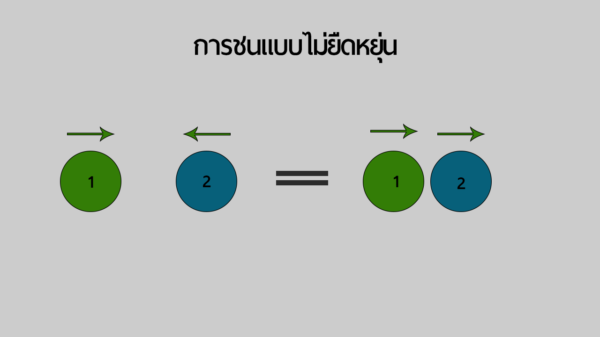

ยินดีต้อนรับเข้าสู่เนื้อหาความรู้ฟิสิกส์ เรื่อง โมเมนตัมและการชน
ซึ่งจะขึ้นอยู่กับ มวล(m) และ ความเร็ว(v) โมเมนตัมจะแปรผันตรงกับความเร็วและมวลของวัตถุ
1.การชนเเบบยืดหยุ่น
2.การชนเเบบไม่ยืดหยุ่น
การชนแบบยืดหยุ่น
การชนแบบไม่ยืดหยุ่น เกิดจากการชนกันของวัตถุ 2 วัตถุเเล้วทิศทางหลังการชนจะเเยกออกจากกัน ดังรูปภาพ
หากต้องการรู้ให้มากขึ้นคลิ๊กที่ข้อความนี้
การชนแบบยืดไม่ยืดหยุ่น
การชนแบบไม่ยืดหยุ่น เกิดจากการชนกันสองวัตถุเเล้วทิศทางของวัตถุเปลี่ยนไป ไปในทิศทางเดียวกัน ดังรูปภาพ
หากต้องการรู้ให้มากขึ้นคลิ๊กที่ข้อความนี้